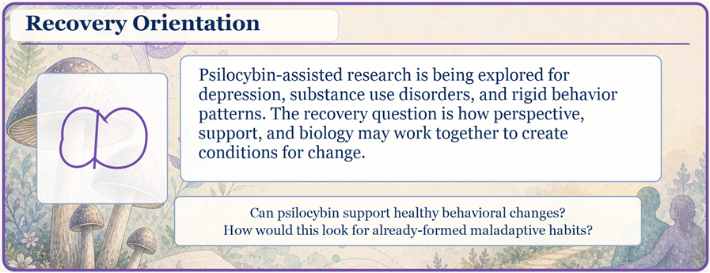
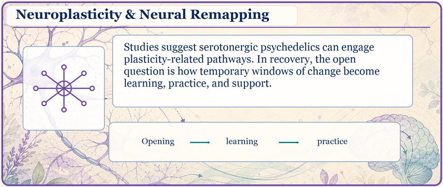
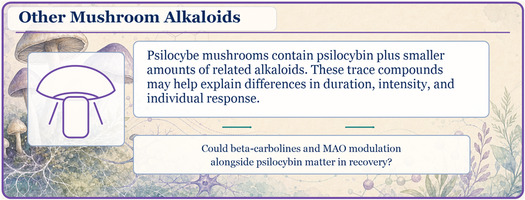
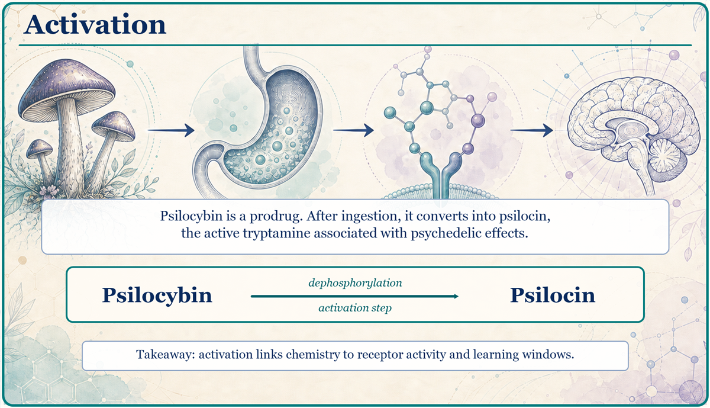
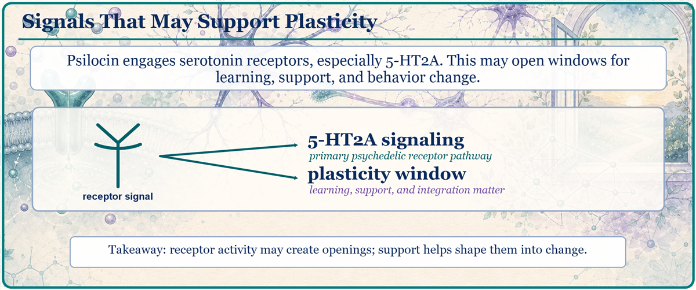
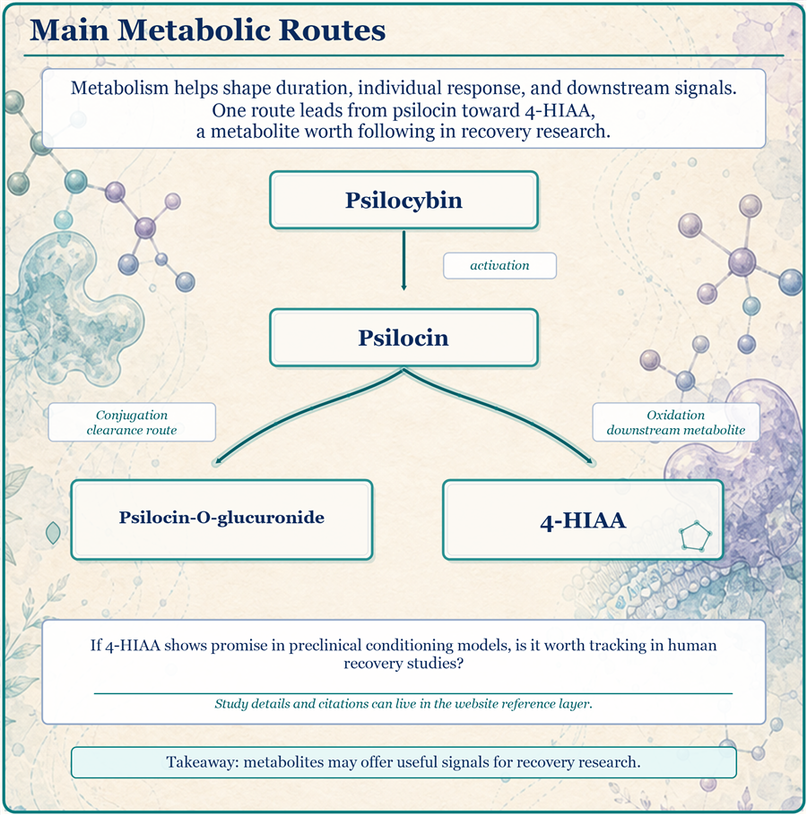
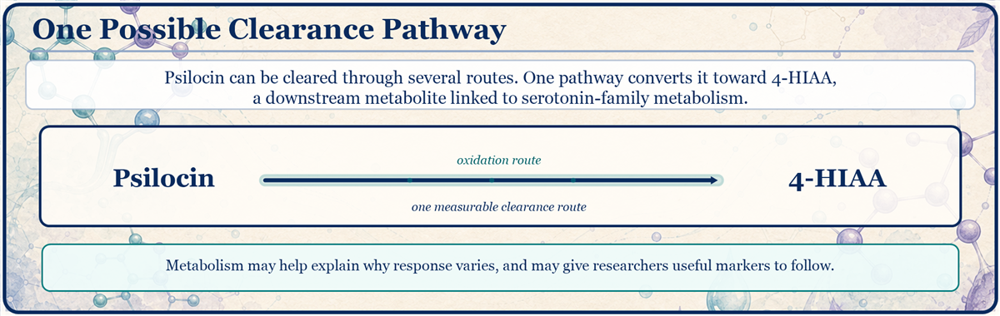
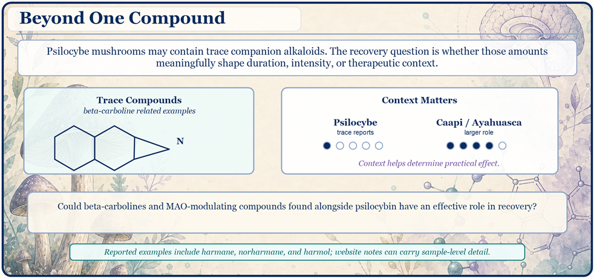
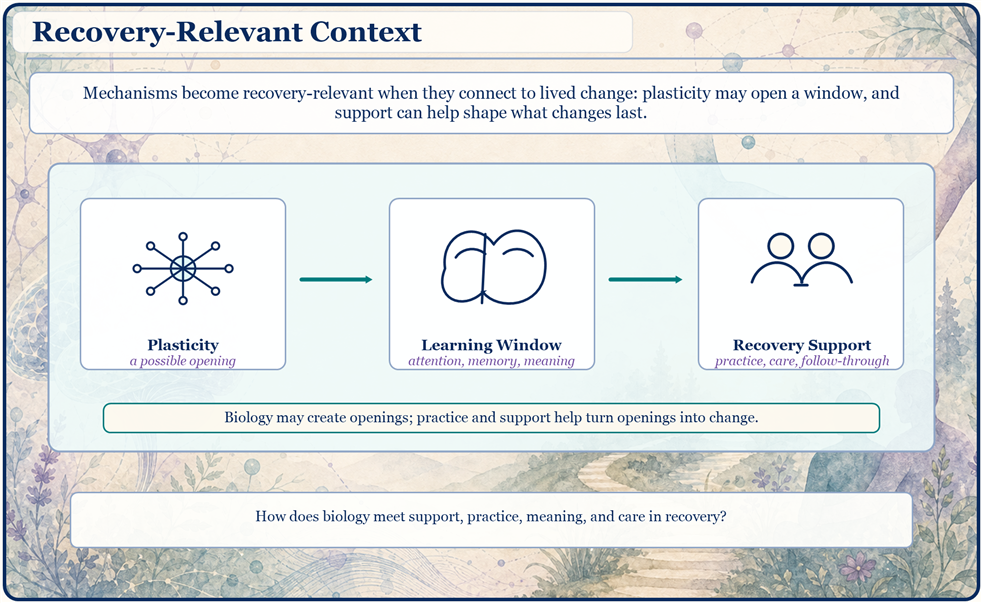
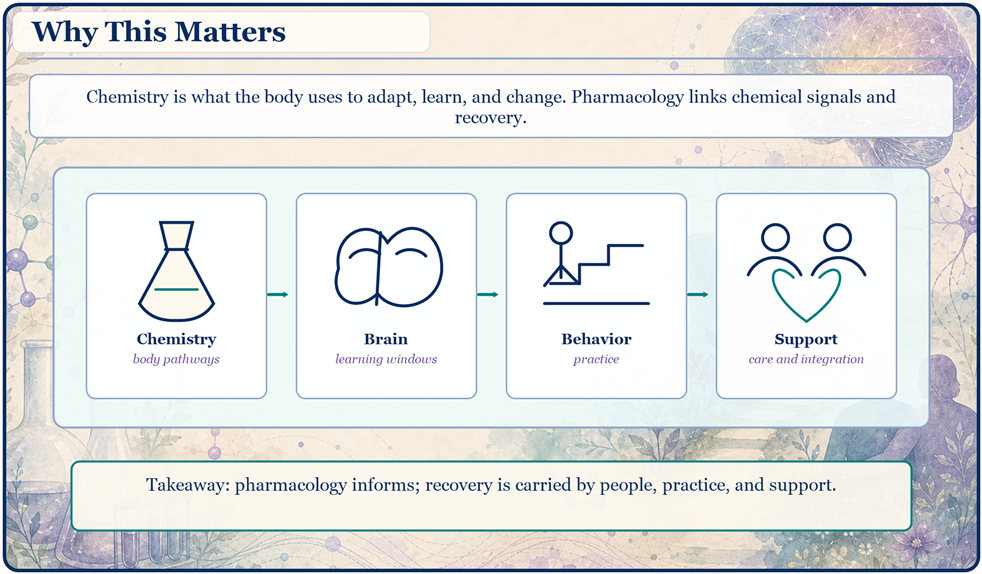

Recovery Orientation
First left-column AI-hybrid panel with locked copy and border clipping rule.

Live review page for the current brochure back-side redraw. This page is designed for phone review through GitHub Pages.
Center-column AI-hybrid pass with Activation, Signals That May Support Plasticity, and Main Metabolic Routes in the current visual system.

First left-column AI-hybrid panel with locked copy and border clipping rule.

Left-column AI-hybrid panel connecting plasticity, learning, and practice.

Left-column AI-hybrid trace-compound panel with locked copy and recovery-facing question.

AI source border cropped, art clipped to the official rounded panel, and code border drawn last.

Receptor/plasticity panel with a quiet title band over the bleed-art layer.

Illustrated metabolic pathway with deterministic labels and the shared header-band rule.

Right-column psilocin to 4-HIAA route panel with a quieter title band over AI bleed art.

AI-hybrid trace-compound panel using the border clipping rule and recovery-facing question.

AI-hybrid recovery panel connecting plasticity, learning windows, and support.

AI-hybrid closing panel linking chemistry, brain, behavior, and support.
